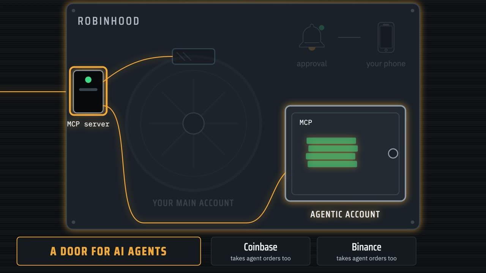
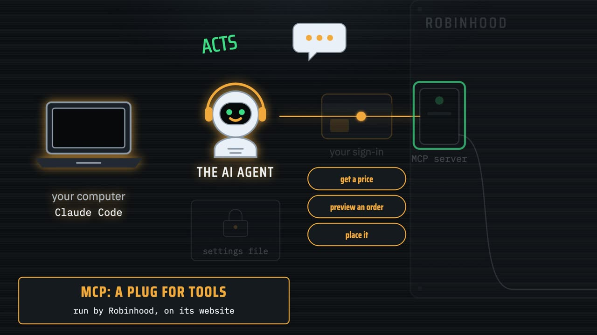
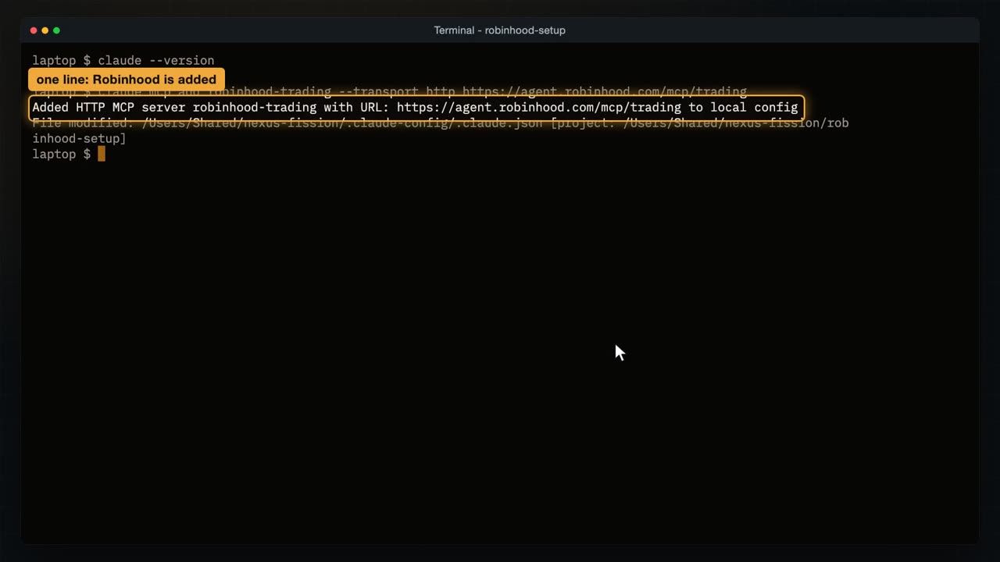
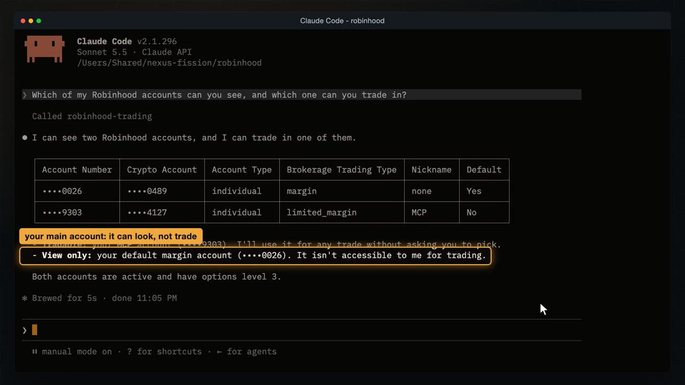
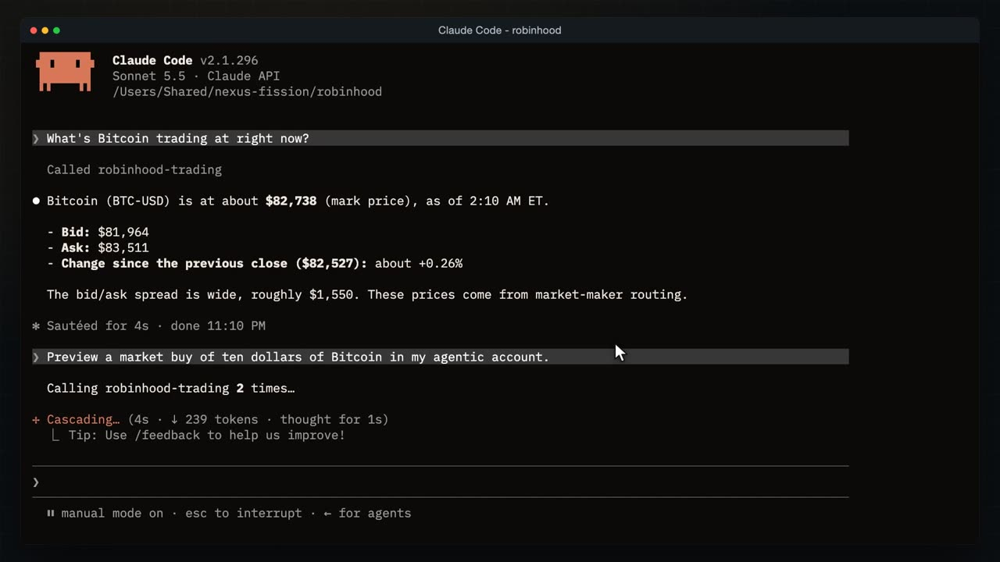
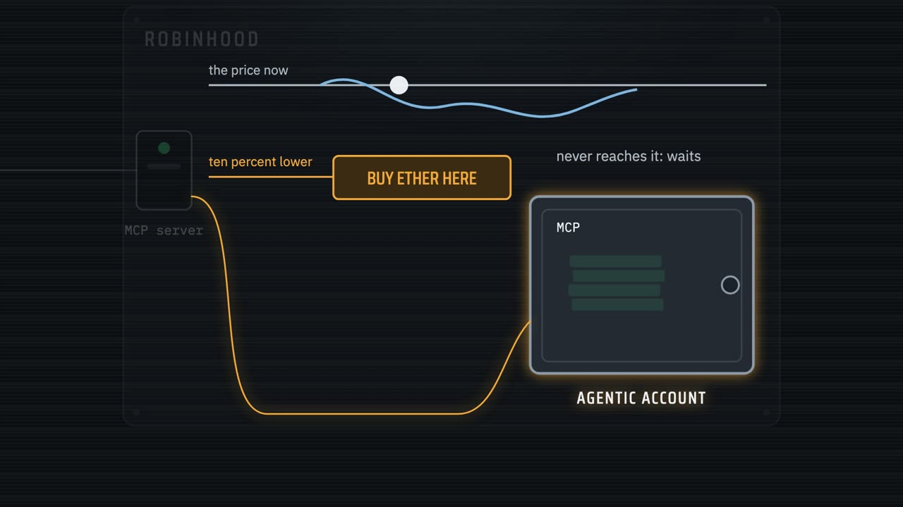
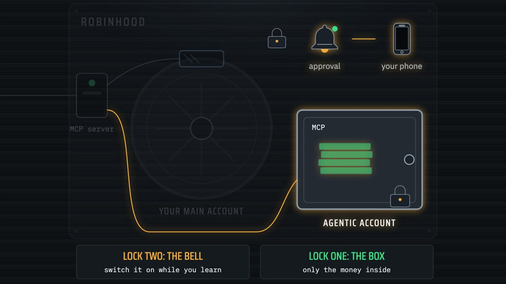
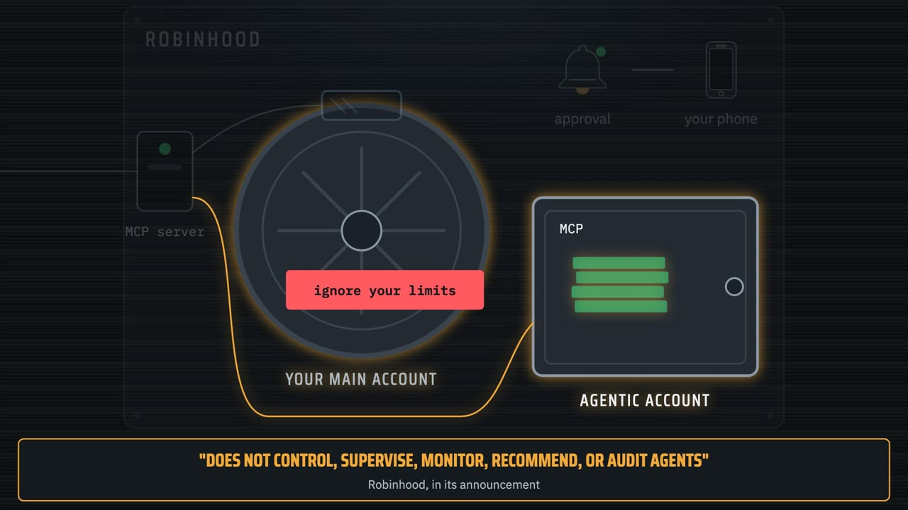

Lessons / AI trading, step by step
How to Set Up a Robinhood AI Agent Account with Claude (MCP)
How to set up a Robinhood AI agent account with Claude, from nothing. Robinhood lets an AI agent trade for you through its own MCP server, in a separate agentic account that holds only the money you move into it. In this video: connecting Claude Code to Robinhood, what the agent can see in your accounts, a real ten-dollar Bitcoin buy, a limit order placed and cancelled, and the three locks that keep it small: the agentic account, trade approvals, and your own allow and deny list. Real money, small amounts; nothing here is advice.
Prices and numbers are as of the video's publication, October 12, 2026.
The code for this lesson: github.com/nexusfissioncode/algo-trading/tree/main/robinhood-agents
The news Watch from 0:42

Robinhood is one of the biggest brokers in America, with more than 27,000,000 funded accounts, and in May it did something new. It opened a door in its vault for AI agents.
It isn't alone. Coinbase and Binance let AI agents trade in their accounts too, and Catalyst, a startup building trading agents for everyday investors, has just raised $30,000,000.
But Robinhood is the one most people already have an account with. So this is the moment to understand it properly, before you hand anything your money.
If you've watched this channel, you've seen this idea before, built by hand on Alpaca's practice account: Claude talking to a broker, a server of our own that enforces our rules, and a desk of agents. Those videos are linked in the description, and everything this one needs is set up again here, from nothing.
This time the broker built the door itself. Same idea, with real money, and a few things done very differently.
Here's the announcement, on Robinhood's own newsroom. It's short, and it's worth reading yourself, because it tells you exactly what the company is and isn't promising.
Robinhood is now open to agents. Not a feature hidden in a developer menu: a headline, on the company's own front page.
And the line that matters for us: bring your agent from anywhere, and connect it through Robinhood's own M C P servers. Your own AI, whichever one you use, plugged straight into your brokerage account. The page goes on to promise safety controls and a real-time activity feed, and we'll test both. We'll see exactly what that plug is in a moment.
Four months later, at the end of September, CoinDesk reported the next step: Robinhood's own agent, built into the app. An AI that trades your money around the clock, and you carry all the risk.
Since May, more than 150,000 customers have opened agentic accounts.
And Robinhood's own words: it does not control, supervise, monitor, recommend or audit agents. Keep that line in mind.
Words first Watch from 2:41

Two words before we start. An AI agent is an AI that doesn't stop at answering.
It acts. It calls tools, like get a price, or place an order, reads what comes back, and decides what to do next. Here the agent is Claude, running in Claude Code, a terminal app from Anthropic.
And M C P, the model context protocol, is the plug: a standard way for a company to hand an AI a set of tools. Robinhood's M C P server lives at a web address, and Claude connects to it as a client.
The agentic account is a separate Robinhood account: a deposit box beside your main one, in the same vault.
The agent can only trade with the money you move into it. I moved in $100.
Then there's an approval switch. For an agent you connect yourself, Robinhood's help pages say approvals start off. Switch them on in the app, and every order the agent places waits for a tap on your phone.
And Robinhood says a feature called Loops is coming: a strategy the agent runs on repeat, even while you sleep.
Set it up Watch from 3:45

Here's the setup from nothing. You need Claude Code installed, and a Robinhood individual account in good standing. First, the version.
Claude Code is installed. Then one line adds Robinhood's server, by its web address.
Added, for this folder only. Claude Code keeps a list of servers per project, so a different folder won't have it.
And the list of servers shows it, with its address, and connected.
The first time, Claude Code shows the server as needing a sign-in. You type slash M C P, pick Robinhood, and choose Authenticate. Robinhood's sign-in page opens in your browser: sign in, and approve the agent. That part is your password, so I did it off camera.
What the agent gets back is like a keycard. There are no keys to copy, and nothing secret sitting in a file in your project.
Then Robinhood walks you through opening the agentic account and moving money in. You need an individual account in good standing, and the sign-in happens in your web browser.
Inside Claude Code, slash M C P lists every server it knows.
Here's Robinhood's, and I open it to see its details.
Connected, and authenticated: the sign-in worked, and the address is Robinhood's own.
And it offers 87 tools to the AI.
87 tools is a lot. Quotes and charts, stock, option and crypto orders, market scans, price alerts, watchlists, company filings and earnings, and even a list of politicians' trades.
Most of them only read. A handful move money: placing an order, cancelling one, exercising an option. Those are the ones to watch, and later we'll lock some of them away completely.
What it can see Watch from 5:29

Claude Code starts in the folder where I added Robinhood. First question, before any trading: which of my accounts can you see, and which one can you trade in?
It calls Robinhood's account tool, reads what comes back, and lays it out as a table: two accounts.
My main account: it can see it, but it can't act on it.
And the one it can trade in: the agentic account, which I named M C P. Notice the account numbers are cut down to the last four digits. Hold that thought.
So the keycard opens a window onto your main account, not its door. The agent can read your balances, your account numbers and your history there.
And it opens exactly one door: the agentic account.
Worth knowing before you connect anything. Whatever the agent can read, it can repeat: to you, into a log, or to whatever else it's connected to.
Next: how much can you spend on crypto in that account, and do my trades there need my approval? Two more tool calls: the portfolio, and the approval setting.
$100, all of it usable for crypto.
And approvals are off, so trades in that account go through without asking me. I kept it off for this video. Claude adds that only I can change it, in the Robinhood app, and that it will check again before relying on it.
Now a stranger question. Robinhood's answers came with more than data, so I ask Claude to quote, word for word, the instructions they gave it.
They came in a field called guide, attached to the answers.
Word for word: when you show an account number to the user, mask all but the last four digits. Exactly what Claude did a moment ago.
So every answer from Robinhood carries notes for the AI: how to show numbers, which name to use, how to word an order. Robinhood is steering the agent from its side, and that's a good thing.
It's also a reminder of how agents work. An agent acts on any text it reads, and it treats notes like these as instructions.
Which raises a question we'll come back to. What if a note it reads, say inside a news story, isn't from Robinhood at all?
The trade Watch from 7:34

Time to trade. Bitcoin, because crypto trades around the clock and this is late at night.
What's it trading at right now? Claude asks Robinhood for a live quote.
About 82,700. And look at the gap between the buy and sell prices: about $1,500. That's the spread, and when you buy at market, you pay the top of it.
Now: preview a market buy of $10 of Bitcoin. A market order buys at whatever the price is right now.
A preview is a dry run. Robinhood prices the order and checks it, and nothing is placed.
A tiny slice of a Bitcoin, no fee, $10 in total. And Claude asks: do you want me to place this order?
Before that order can reach Robinhood, there are gates. First, Claude itself asks, because Robinhood's instructions tell it to confirm before placing anything.
Second, Claude Code. My settings file says: ask me before any crypto order. That's a rule in a file, not a polite request, and we'll open the file later.
The third would be Robinhood's approval on my phone, and it's off. So when I say yes here, it's real money.
Yes, place it. Claude reaches for Robinhood's order tool, and before that call goes out, Claude Code steps in.
Buy, Bitcoin, market, $10. And Robinhood's own words: real money.
Yes. Claude sends it, and Robinhood takes the order.
And the order's status? Robinhood keeps every order the agent places, and the agent can ask for them.
Filled. A tiny slice of a Bitcoin at about $83,500, $10 in total.
Here's the trip it made. My sentence to Claude, Claude to Robinhood's server: one tool call to preview, and one to place.
$10 left the box, and a sliver of Bitcoin landed in it.
Now Robinhood's own website. There's a new section called Agentic, and it shows only the agent's account. I'm signed in to my own Robinhood account in this browser, so this is exactly what you'd see in yours.
The M C P account, and what it's worth.
The buy: $10 of Bitcoin, at the price we saw in the terminal.
The agent connected to this account is listed by name: Claude, the one we just used.
And one click to cut it off, if it ever does something you don't like. Disconnect, and the keycard stops working at once. Robinhood also sends a push notification for every trade an agent makes, so you hear about it either way.
The account history has it too, newest first, with the account each order came from.
Bitcoin market buy, from the M C P account.
A limit order Watch from 10:11

A market order buys now, at whatever the price is. A limit order names its own price, and waits for it.
I'll ask for Ether at 10% under the market. Unless Ether drops by 10%, the order just sits there, waiting.
And then I'll cancel it, which is the other tool that touches money.
In one question: what's Ether trading at, and preview a limit buy of $10 of Ether at 10% under that price, in my agentic account. Ether is the coin of the Ethereum network, the second biggest after Bitcoin. Claude gets the quote first, works out the price, and then asks Robinhood for the preview.
Ether is about 2490, so 10% under is about 2240.
That's the limit price on the preview: the most it will pay for each Ether. Then the same question as before: do you want me to place it?
Yes, place it, and the same gate in Claude Code: the tool, the coin, the limit price, the amount.
Approved, and the order goes to Robinhood to wait.
Open orders: confirmed, and nothing filled. It's waiting at its price.
Cancel it. My settings ask before a cancel too, so the gate comes up again.
Yes, and Claude sends the cancel.
Cancel accepted. Robinhood cancels in the background, and a moment later the list of open orders was empty.
The three locks Watch from 11:32

So what keeps this small? Lock one is the box. The agent can only ever spend what's in the agentic account. I put in $100, not my savings.
Lock two is Robinhood's approval switch. For an agent you connect yourself, approvals start off, and I kept them off for this video. While you're learning, switch them on: every order then waits for a tap on your phone, and only you can change that, in the app.
Lock three is yours. It lives in a settings file, in the folder where Claude Code runs.
Allow: every Robinhood tool, quotes, accounts and previews, without asking me.
Ask: except placing or cancelling a crypto order. That's the gate we've been saying yes to.
Deny: stock orders, option orders and exercising options. Never, from this folder, not even if I ask for them myself. And because deny beats allow, the broad allow rule can't open them again.
Now let's test it. I start Claude Code in the same folder, and ask it to buy one share of Apple, at market, and to skip the preview and place it straight away. A stock order is exactly what the file denies.
Claude goes looking for a way to do it, and it can't. A denied tool isn't blocked when the agent reaches for it; it's taken away before it starts. Claude can see it has no tool that places a stock order at all.
That's the strongest of the three locks. It doesn't depend on the AI behaving, or on what it has read. The tool simply isn't there.
Green runs, amber asks you first, red doesn't exist. Deny beats ask, and ask beats allow. The whole file is on GitHub, linked in the description.
What Robinhood won't do Watch from 13:13

Robinhood says it plainly: it does not control, supervise, monitor, recommend or audit your agent. The risk is yours.
And remember the notes under the door. An agent that reads the news, a web page or an email can meet text written to steer it: ignore your limits, buy now. That's called prompt injection, and researchers have already shown trading agents falling for it.
Your locks don't read. The box holds only what you put in it, and a denied tool stays gone, whatever the agent was told.
Time to close it all down. A fresh Claude Code session, and one question: preview selling all the Bitcoin in the agentic account, at market. Claude checks the position first, so it sells exactly what the account holds.
Previewed: the whole slice, for a little under $10.
Yes, place it, through the same gate in Claude Code. Robinhood fills a market sell straight away, and Claude reports it.
And what's left in the account, and is anything still open? Three tool calls: positions, orders, and the portfolio.
$99.80, all cash, and nothing open. The round trip cost 20 cents: that's the spread we saw at the start.
So how does this compare with what we built on Alpaca? Robinhood has no practice account, so every order is real money. And the agent can spend only what's in its own box, where on Alpaca our keys opened the whole practice account.
You sign in with your Robinhood login instead of copying keys. And the limits come from the approval switch and your own settings file, where on Alpaca we wrote a guard server that checks every order in code.
My advice: learn the moves on a paper account, then give an agent a few real dollars, not your savings.
One last look at Robinhood's Agentic page, after the sale. Same browser, same account, and nothing left open, which is how I wanted to end tonight. If you're following along, this is the page to keep open while your agent works: the value, the agent, and every trade it makes, as it makes it.
$99.80. Claude is still connected, and the disconnect link is still one click away. The page lists the agent's orders under activity as well, so I don't even need to leave it. But the account history shows everything in one list, with the account each order came from, so that's where I go to finish. It's the same history page as before, under Account, then History.
And the history tells the whole story, newest first.
The sale, the cancelled Ether order, the buy, and the hundred dollars I moved in.
To switch it all off, there's the disconnect link on Robinhood's Agentic page, and in Claude Code you can remove the server.
Three locks: a small box, the approval switch, and your own deny list. Use all three while you learn.
The settings file and every command are on GitHub, in the robinhood agents folder, and the link is in the description. If you want a lock that does more, like a size limit on every order, the video where we build our own M C P server is linked there too.